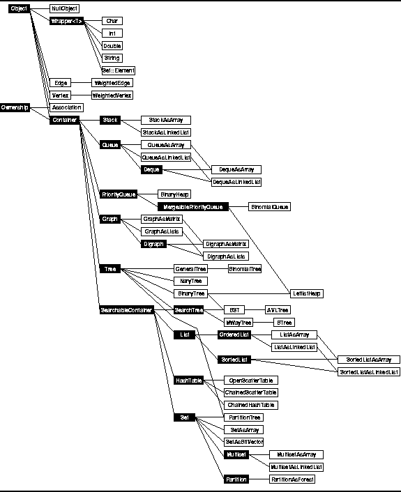
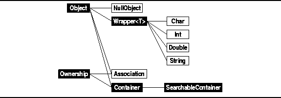

Data Structures and Algorithms
with Object-Oriented Design Patterns in C++
Data Structures and Algorithms
with Object-Oriented Design Patterns in C++
The C++ class hierarchy which is used to represent
the basic repertoire of abstract data types is shown
in Figure  .
Two kinds of classes are shown in Figure ;
abstract C++ classes ,
which look like this
,
and concrete C++ classes ,
which look like this
.
Lines in the figure indicate derivation;
base classes always appear to the left of derived classes.
.
Two kinds of classes are shown in Figure ;
abstract C++ classes ,
which look like this
,
and concrete C++ classes ,
which look like this
.
Lines in the figure indicate derivation;
base classes always appear to the left of derived classes.

Figure: Object Class Hierarchy
An abstract class is a class which specifies an interface only. It is not possible create object instances of abstract classes. In C++ an abstract class typically has one or more pure virtual member functions . A pure virtual member function declares an interface only--there is no implementation defined. In effect, the interface specifies the set of operations without specifying the implementation.
An abstract class is intended to be used a the base class from which other classes are derived . Declaring the member functions virtual makes it possible to access the implementations provided by the derived classes through the base-class interface. Consequently, we don't need to know how a particular object instance is implemented, nor do we need to know of which derived class it is an instance.
This design pattern uses the idea of polymorphism . Polymorphism literally means ``having many forms.'' The essential idea is that a single, common abstraction is used to define the set of values and the set of operations--the abstract data type. This interface is embodied in the C++ abstract class definition. Then, various different implementations (many forms) of the abstract data type can be made. This is done in C++ by deriving concrete class instances from the abstract base class.
The remainder of this section presents the
top levels of the class hierarchy which are shown in Figure .
The top levels define those attributes of objects which
are common to all of the classes in the hierarchy.
The lower levels of the hierarchy
(i.e., those derived from the Container class)
are presented in subsequent chapters where
the abstractions are defined and
various implementations of those abstractions are elaborated.

Figure: Object Class Hierarchy
 Copyright © 1997 by Bruno R. Preiss, P.Eng. All rights reserved.
Copyright © 1997 by Bruno R. Preiss, P.Eng. All rights reserved.